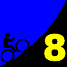

|  |
2008 Low-Key Hillclimbs Week 8: Lomas Cantadas 22 Nov 2008 |
The week 8 mission: to explore strange new hills, to seek out new roads and new civilizations, to boldly go where Low-Key has never gone before....
For the first time, the Low-Key Hillclimbs venture out to the Berkeley Hills. This week's target: Lomas Contadas, a key pillar in the Berkeley Hills Death Ride. The Berkeley Hills may lack the extended climbs that the other regions of the Bay area are spoiled with, but they make up for a lack of duration with steep grades and panoramic views. And there's no shortage of "steep" here: Lomas Contadas sustains, according to Motionbased data, close to 15% for a very long quarter mile. On the Berkeley Hills Death Ride route, only Marin Avenue is tougher, but Marin is burdened with heavy traffic and pesky cross-streets. Whether you've never ridden in the Berkeley Hills before and this is your excuse to give them a look, or you're a local and train on these hills week after week, you won't want to miss this one.
Lomas too short for you, you mileage junkies out there? Consider a post-climb (or pre-climb!) loop of the Three-Bears Loop! Or, if more pain's what you crave, consider further selections from the Berkeley Hills Death Ride! Or finally, if nice views is more your post-climb style, take the partially paved road up to Vollmer Peak!
Our insurance demands it: helmets are required. Sorry kids, no exceptions!
We'll start today at Orinda Community Park on Orinda Way off Camino Pablo, then ride from there to the start, which is quite nearby. The park is directly opposite the fire station in downtown Orinda, on Orinda Way. There's a path from the sidewalk, or a short stairway, leading to the picnic tables we're we'll set up. Some photos are available here!
 The best way to Orinda is BART -- reg is quite close to the Orinda BART station. Alternately, from Berkeley it's a good warm-up up Spruce and down Wildcat Canyon Road. But if you must drive, there's plenty of parking in Orinda.
The best way to Orinda is BART -- reg is quite close to the Orinda BART station. Alternately, from Berkeley it's a good warm-up up Spruce and down Wildcat Canyon Road. But if you must drive, there's plenty of parking in Orinda.
| stats | 2.69 miles, 1184 feet, 8.3% |
| format | mass start |
| time | reg 9:15 - 10:00 start 10:10am |
| coordinator | |
| aerial view | Google Maps |
| route profile | Motionbased profile |
| weather | Weather Underground Weather Bonk |
| registration form |
PDF release form |
| entry fee | $10 voluntary donation free for juniors 2 free for volunteers free for coordinators |
{kind=link}